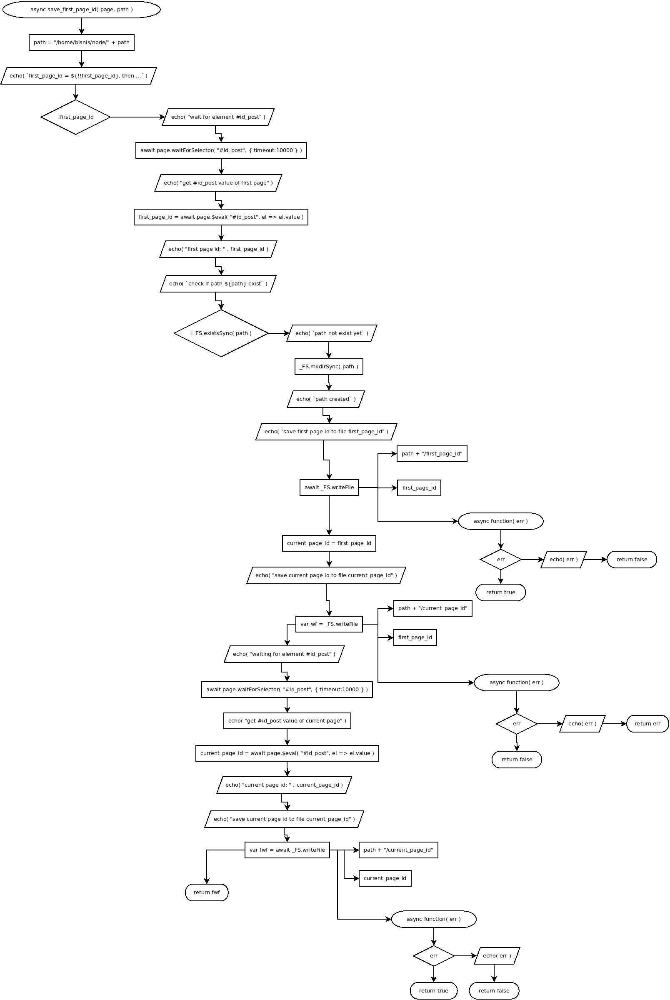

async save_first_page_id( page, path )
Flowchart

Code
async save_first_page_id( page, path ){
path = "/home/bisnis/node/" + path;
echo( `first_page_id = ${!!first_page_id}, then ...` );
if( !first_page_id ){
echo( "wait for element #id_post" );
await page.waitForSelector( "#id_post", { timeout:10000 } );
echo( "get #id_post value of first page" );
first_page_id = await page.$eval( "#id_post", el => el.value );
echo( "first page id: " , first_page_id );
echo( `check if path ${path} exist` );
if( !_FS.existsSync( path ) ){
echo( `path not exist yet` );
_FS.mkdirSync( path );
echo( `path created` );
}
echo( "save first page id to file first_page_id" );
await _FS.writeFile( path + "/first_page_id", first_page_id, async function( err ){
if ( err ){
echo( err );
return false;
} else {
return true;
}
});
current_page_id = first_page_id;
echo( "save current page id to file current_page_id" );
var wf = _FS.writeFile( path + "/current_page_id", current_page_id, function( err ){
if ( err ) {
echo( err );
return false;
} else {
return true;
};
} );
} else {
console.log( "resave first_page_id into file to ensure" );
await _FS.writeFile( path + "/first_page_id", first_page_id, async function( err ){
if ( err ){
echo( err );
return err;
} else {
return false;
}
} );
echo( "waiting for element #id_post" );
await page.waitForSelector( "#id_post", { timeout:10000 } );
echo( "get #id_post value of current page" );
current_page_id = await page.$eval( "#id_post", el => el.value );
echo( "current page id: " , current_page_id );
echo( "save current page id to file current_page_id" );
var fwf = await _FS.writeFile( path + "/current_page_id", current_page_id, async function( err ){
if ( err ){
xecho( err );
return false;
} else {
return true;
}
} );
return fwf;
}
}